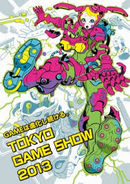
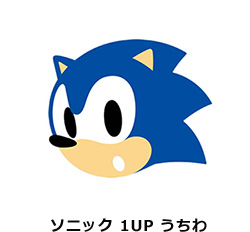
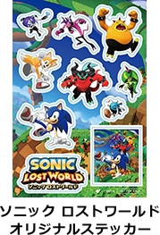

ソニック関連のイベント情報を紹介
2013.09.12

2013年9月19日（木）～9月22日（日）に、幕張メッセにて開催される「東京ゲームショウ2013」（主催：一般社団法人コンピュータエンターテインメント協会、共催：日経BP社）へ『ソニック ロストワールド』の出展が決定しました。
当日セガブース内『ソニック ロストワールド』コーナーでは、Wii U版とニンテンドー3DS版『ソニック ロストワールド』の試遊ができます。コーナー付近では「ソニック ロストワールド オリジナルステッカー」を配布し、更に『ソニック ロストワールド』を体験プレイした方には「ソニック 1UP うちわ」をプレゼントいたします。
また、9月21日（土）11:00～11:45より、ニコ生番組「セガスタジオ」にて『ソニック ロストワールド』の最新情報をお届けします。「東京ゲームショウ2013」へ足を運べなかった方はニコ生「セガスタジオ」配信をご覧ください。

「東京ゲームショウ2013」は「GAMEは進化し続ける。」をテーマに、様々なゲームに触れることができる日本最大級のイベントです。『ソニック ロストワールド』以外にもたくさんのコンテンツに触れる機会がありますので、ぜひ、会場へ足をお運びください。
※Wii U版、ニンテンドー3DS版の体験プレイで配布する 配布物は予告なく変更になる場合があります。
※ 配布物は数に限りがあります。無くなり次第終了となりますので、ご了承ください。
※ニコ生配信スケジュールは予告なく変更になる場合があります。
| イベント名称 | TOKYO GAME SHOW 2013／東京ゲームショウ2013 |
|---|---|
| 日時・場所 | ビジネスデイ：2013年9月19日（木）、20日（金）10:00～17:00 一般公開日： 2013年9月21日（土）、22日（日）10:00～17:00 幕張メッセ（千葉県千葉市美浜区中瀬2-1） |
| 参加方法 | ビジネスデイ、一般公開日で参加方法が異なります。 詳細は「東京ゲームショウ2013」公式サイトをご確認ください。 詳細はコチラ |
| 主催 | 主催：一般社団法人コンピュータエンターテインメント協会、 共催：日経BP社 |
| 公式サイト | http://tgs.cesa.or.jp/index.html |
※その他詳細情報につきましては、上記公式サイトをご参照ください。